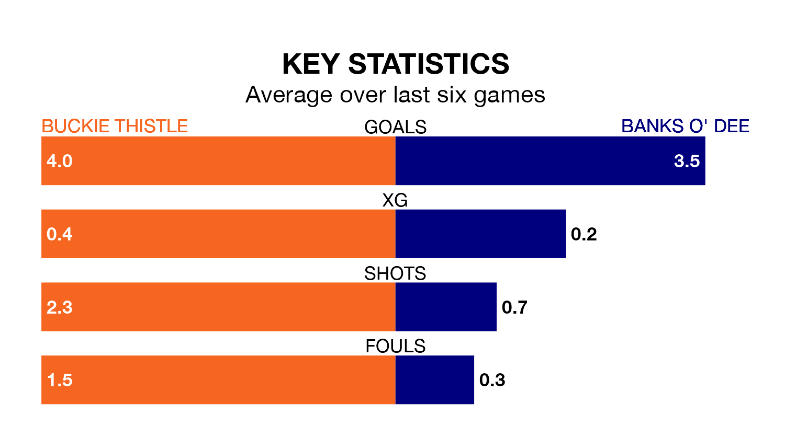

Two of Highland Football League's meanest defences go head-to-head at Victoria Park on Saturday, when Buckie Thistle host Banks O' Dee.
Only two sides – Brechin City and Brora Rangers – have conceded fewer goals than Buckie Thistle to date: the home side have let in just 14 goals in 14 games.
Banks O' Dee have conceded 19 goals in 20 games, giving them the fourth tightest back line so far this season.
Buckie Thistle are in exceptional form in Highland Football League, with six wins and no losses from their last six games.
With five wins and a draw over that period, Banks O' Dee's form is slightly worse – they have taken 16 points from 18, compared to the home side's 18.
The visitors are second in the table after 20 games, of which they have won 13 and drawn six, earning 45 points.
Buckie Thistle are three places behind Banks O' Dee in fifth, with 12 wins and one draw putting them on 37 points.
In the last three years, Buckie Thistle and Banks O' Dee have played each other on three occasions. They won one each, and they drew once.
Their last meeting was on September 16, when Banks O' Dee won 2-0 at home.
Buckie Thistle's last match was on January 13, a 3-2 win against Huntly.
Banks O' Dee beat Keith 3-1 last time out, on Wednesday.
Updated: 08:51 (UTC), 25/01/24